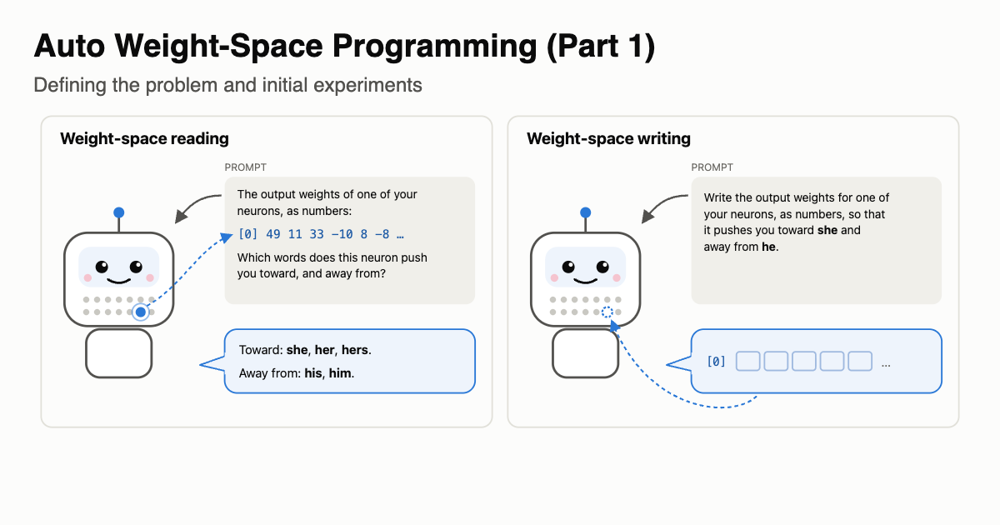

Defining the Problem and Initial Experiments
We formalize weight-space programming and set the goal of auto-WSP. As a toy first step, Qwen3.5-4B learns to apply the logit lens to 128-number slices of its own unseen neurons (99.8% on a four-way test, chance 25%), while naming the tokens outright, writing weights, tracing circuits and predicting behavior are next steps.
